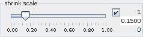

SHRINK CELLS
The shrink cells module produces a mesh containing disjoint cells which can be optionally shrunk relative to their geometric centers.
Input data
At input the module requires a field.
Output data
The output field is irregular 3-space. There is a 3D geometry object of the field.
Computation parameters

The shrink scale slider adjusts a scaling factor between 0 and 1. If check box on the right hand side is on the user can change minimum, maximum and current value by typing the values into the text fields.
Presentation parameters
Presentation tab contents are described in the common interfaces section unter the Presentation Panel entry.
Example
Choose the test cells module from test objects library, shrink cells module from the general mappers and accessories library, move them to the workspace and connect them. Choose an appropriate value for shrink scale in the shrink cells module GUI. In the test cells module presentation parameters choose lines and switch off surfaces.